Farmhouse spring decor goes wrong when everything matches. The good version looks like someone walked around the house, picked up a pitcher, a jar and a basket, and filled them.
The recipe is short: mismatched containers, wood and white as the base, light fabrics and low arrangements.
These 37 ideas cover flowers, living rooms, mantels, kitchens, porches, entries and bedrooms. Read the five rules first, then pick the room you want to freshen.

Five Rules for Breezy Farmhouse Spring Decor
- Use containers that were not sold as a set. Enamel pitchers, mason jars, crocks and galvanized tins hold flowers better than a matching vase trio.
- Let wood and white lead. Weathered wood, cream and white form the base. Color comes only from flowers and one fabric.
- Choose linen, cotton and gingham. Washed fabrics in lighter shades replace wool and velvet.
- Keep arrangements below eye level at the table. Low flowers look natural and do not block conversation.
- Put a basket where things land. A woven basket by the door or the sofa gives clutter a home and adds texture.
Flowers in Containers You Already Own
1. Put Garden Roses in a Wide-Mouth Pitcher
Cut roses in a ceramic pitcher look gathered, not arranged. A wide mouth lets you build them loosely, like this pink-and-cream bunch.
A pale green plaid throw draped over the table edge, not folded, brings in the second color.
Recut rose stems at an angle, strip the leaves below the waterline and change the water daily. Roses clog fast.
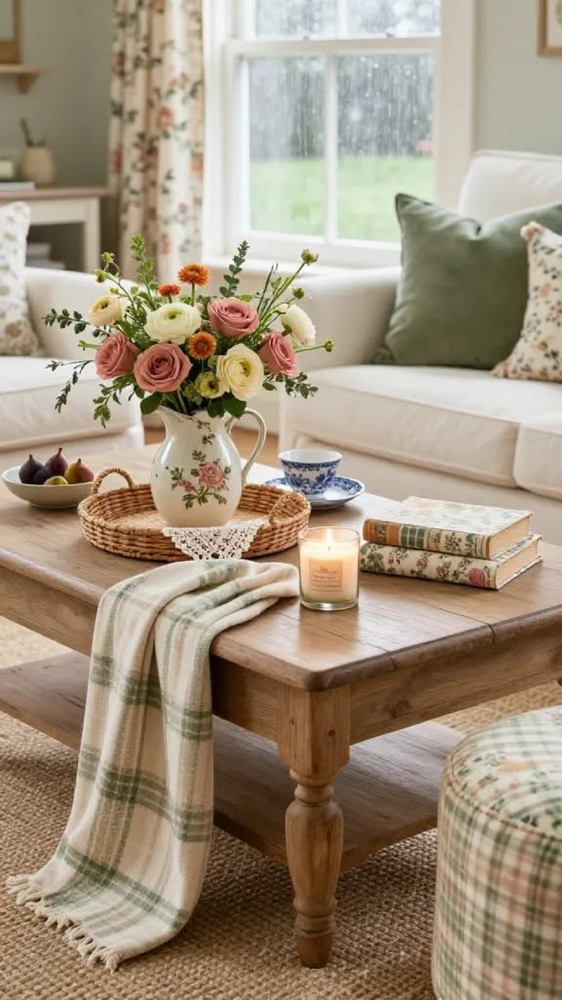
2. Pick Wildflowers for an Enamel Pitcher
A painted enamel pitcher makes a bouquet feel picked from the garden. Mix daisies, Queen Anne's lace and anything blue, as in this one.
If the enamel is chipped, set a glass jar inside so rust does not stain the table.
A bowl of lemons beside it adds yellow without a second bouquet.
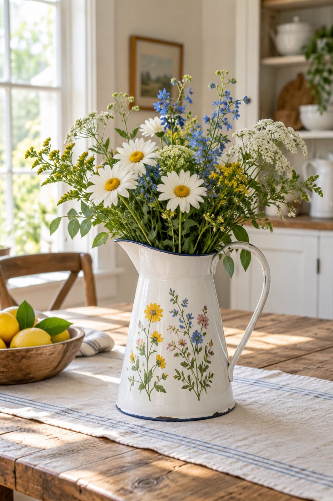
3. Fill a Galvanized Pitcher
A galvanized pitcher turns a few stems into a centerpiece. This one holds white blooms and eucalyptus.
Set woven placemats under plain plates to keep the table casual.
Galvanized metal can leave rings on wood, so put a small saucer or a coaster under the base.
Keep the whole arrangement about 12 inches above the table so guests can see over it.
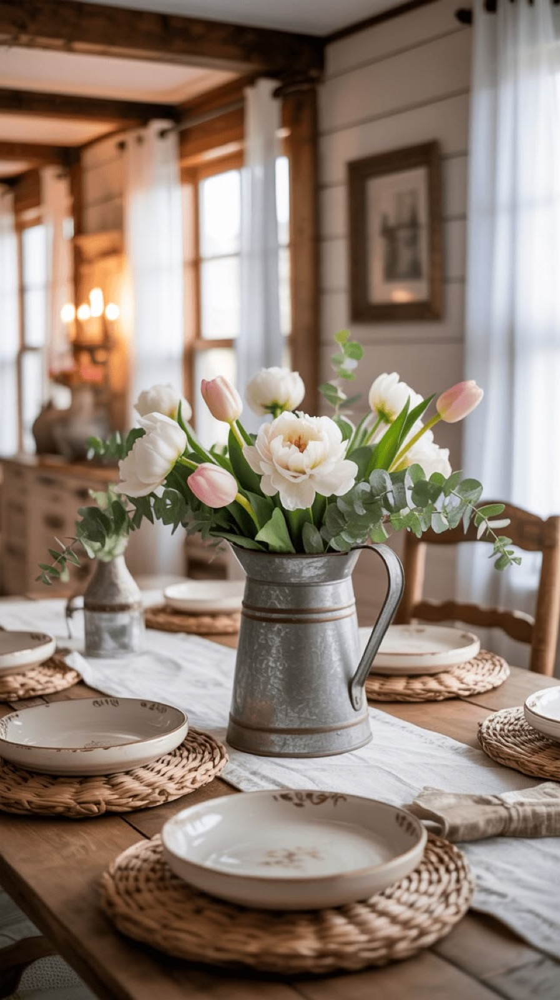
4. Use a Shallow Bowl and a Pin Frog
A shallow bowl makes tulips look arranged. Fill it with floral foam or set a pin frog in the base so the stems stand.
Soak the foam first and press the stems in at an angle.
Put it near a window but out of direct afternoon sun, which wilts tulips fast.
A round wooden board under the bowl protects the counter and adds warmth, as here.
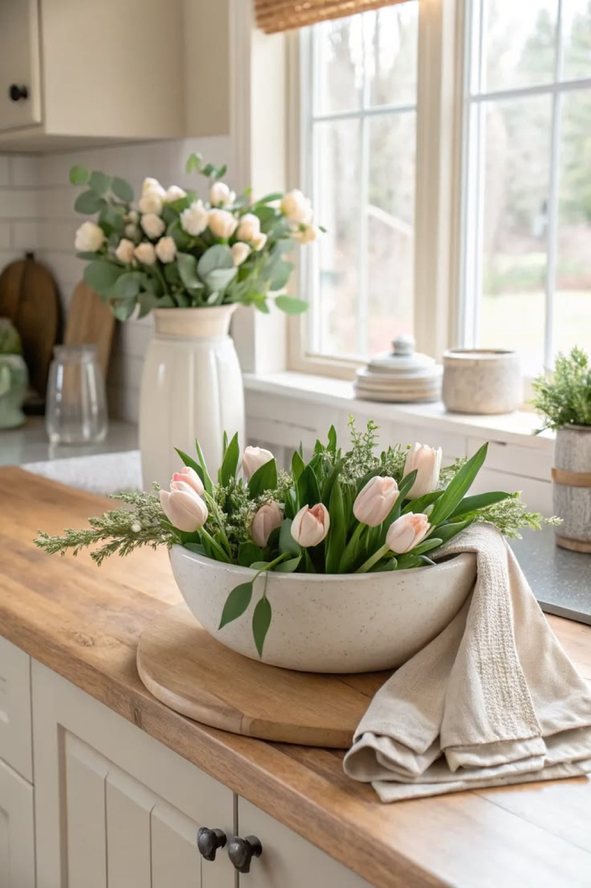
5. Fill a Dough Bowl With Moss
A dough bowl is a long, low centerpiece for a farm table. Fill it with moss, set pillar candles in the middle and tuck in a few eggs.
Use LED pillars if guests will lean in. Real flames near dry moss are a hazard.
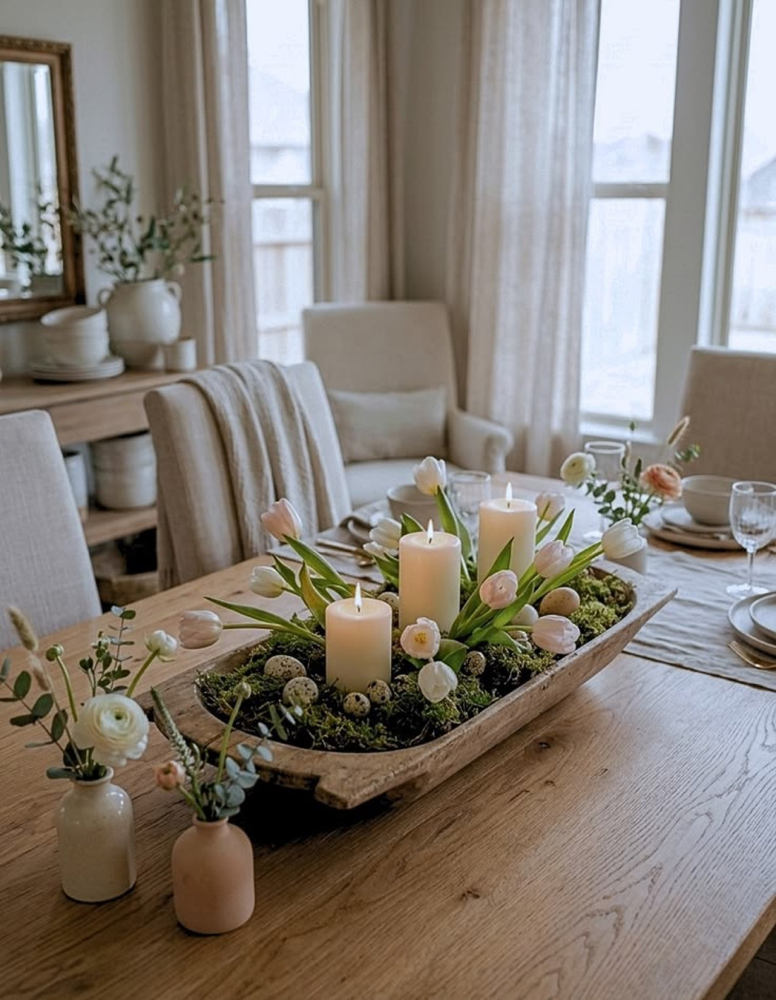
6. Load Chunky Shelves With Jars
Chunky wooden shelves can hold a lot of flowers. Group small vases and pitchers in odd numbers, as here.
Let cut branches reach past the shelf. It looks natural, not styled.
Water is heavy, so check the bracket rating before you load a shelf with jars.
Keep the tallest stems at one end so the shelf has a high point.
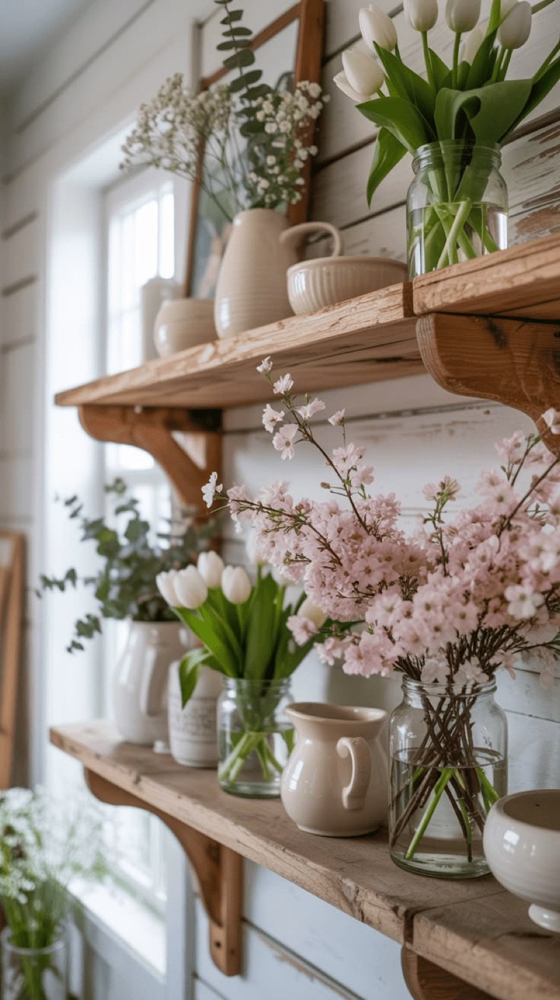
7. Pair Tulips With Pinecones
Pinecones and tulips pair well because soft meets rough. Keep a few cones from winter for exactly this.
Group jars of nuts and acorns on a tray so they look collected.
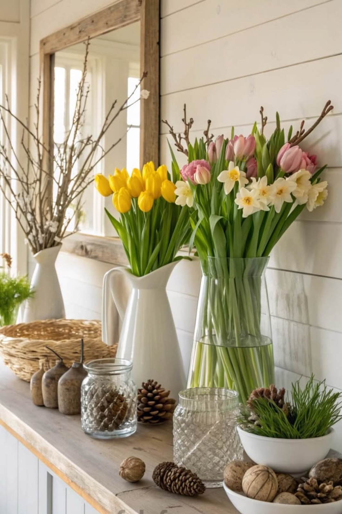
Living Rooms and Sunrooms
8. Choose a Slipcover You Can Wash
A slipcovered sofa is built for spring because you can wash it. Choose white or oatmeal and add two pink pillows and one cream.
Float open shelves beside the windows for jars and a few stems, as here, and keep the lowest shelf clear.
Wash the slipcover cold and put it back on while still slightly damp so it fits smoothly.
A jute rug under the sofa grounds the pale palette.
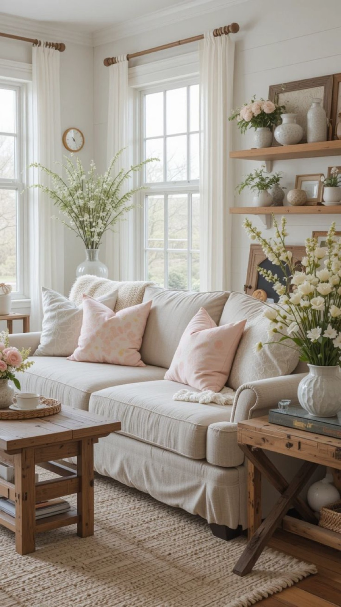
9. Make One Corner for Sitting
Make one corner for sitting. A round chair, a small wooden table and a stack of books are enough.
Leave the window uncovered by day and put a lamp within reach for evening. This chair has a full bookcase at its back.
Drape the knit throw over one arm so it stays within reach.
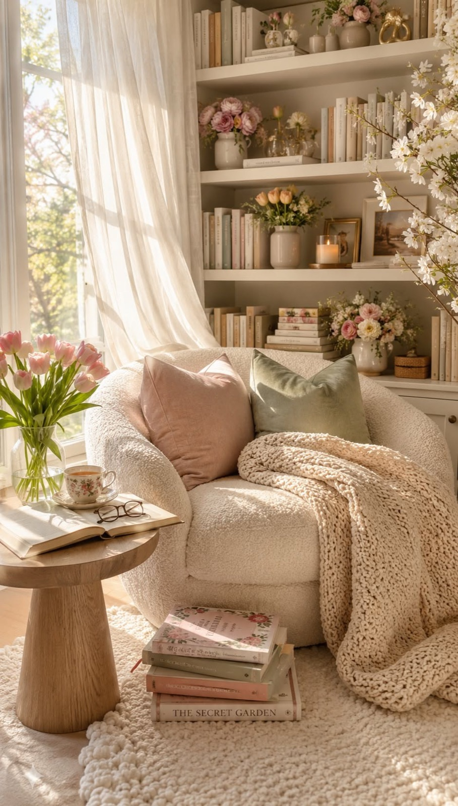
10. Go Light With Wicker
Wicker looks light, so it suits spring. Add washable cushions in cream and one pale green pillow.
Keep the glass-topped table bare except for one vase, as here.
Vacuum wicker with a brush attachment. Soaking it makes it swell.
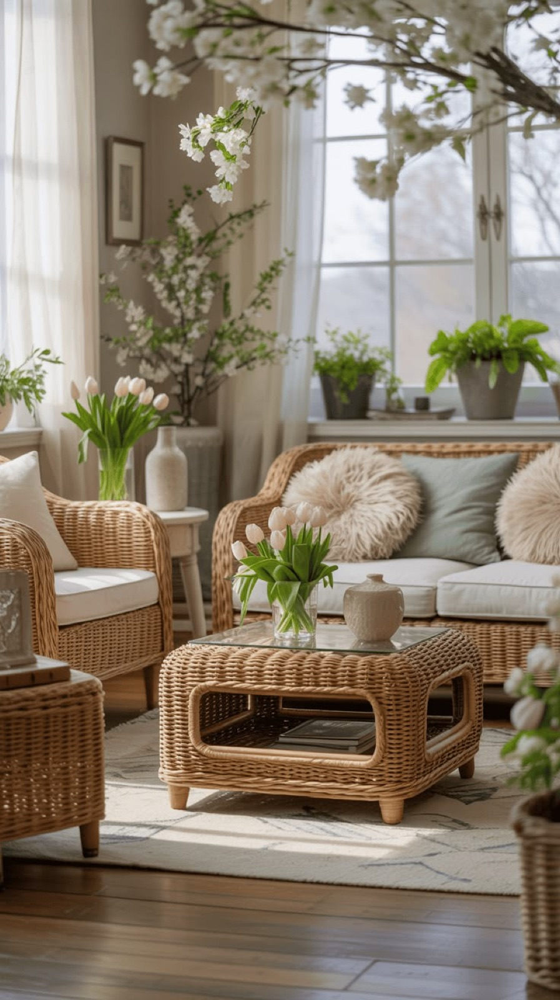
11. Keep the Coffee Table See-Through
Pastels feel farmhouse when the base is white and wood. Use two pastel pillows and a bunch of mixed flowers.
An X-leg coffee table keeps the room airy, because you can see the floor under it.
Use the space under the table for a stack of books or a basket.
Pick two colors from the pillows for the bouquet so the sofa and the flowers match.
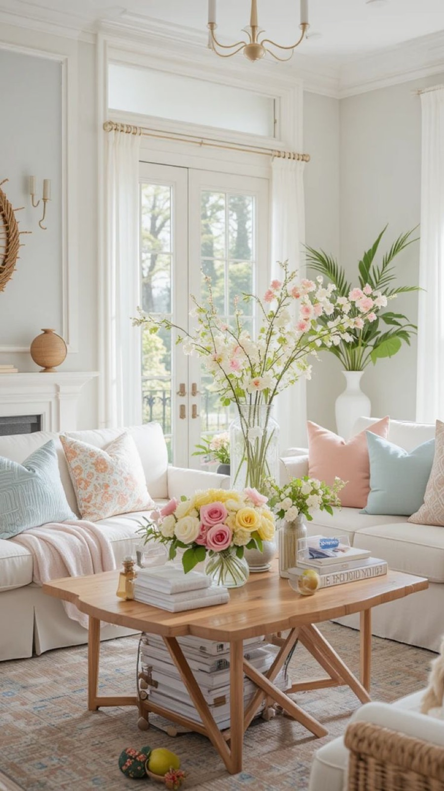
12. Paint the Window Trim Green
Paint the window trim a soft green and the room looks like a cottage. It is a one-weekend project.
Add one navy throw for contrast and a jar of daisies on the table.
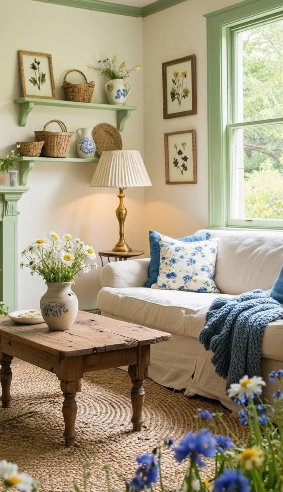
13. Hang Blue Gingham
Blue gingham curtains give a farmhouse room an instant spring lift. Hang them on a plain wood rod.
Hydrangeas drink a lot, so top up the water every day when they sit on a tray like this one.
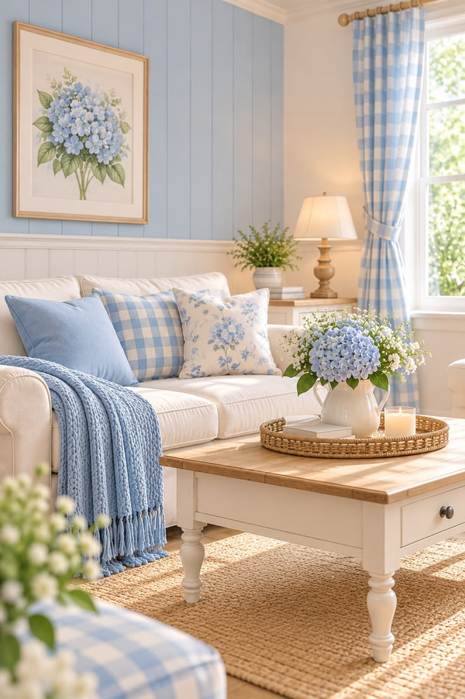
Mantels, Consoles and Trays
14. Give the Mantel One Tall Arrangement
A tall arrangement gives a mantel presence. Use a large vase with branches and roses and keep the rest of the mantel simple.
Hang a garland of small bells along the front edge for a little movement, as here.
Put a basket with a throw on the hearth so the fireplace still looks used.
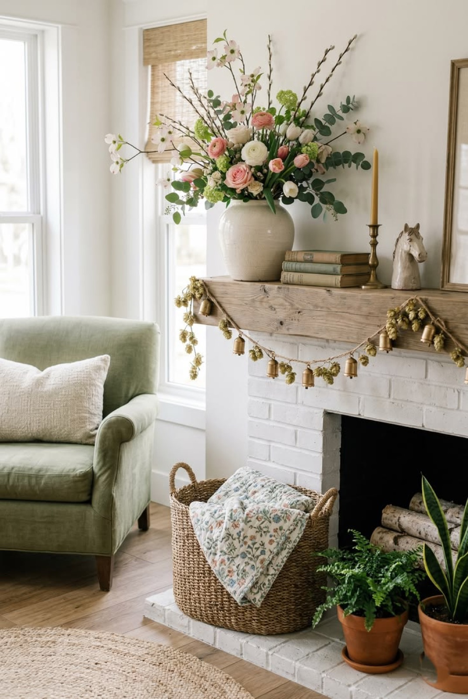
15. Hang a Round Mirror Over the Console
A mirror above a console doubles the flowers. A round one, like this, looks softer than a rectangle.
Store shoes and throws in baskets under the table and set a lantern on the shelf for evening.
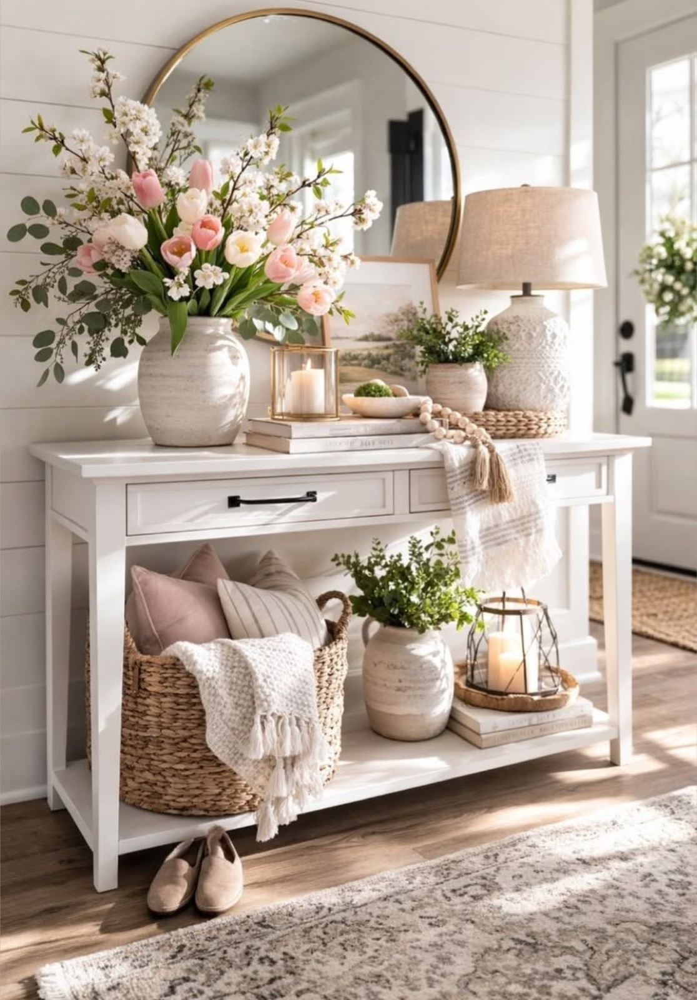
16. Anchor Flowers With a Runner
A runner anchors flowers and protects wood. Choose a light floral in cotton or linen.
Put two vases of tulips at different heights, as here, and one small figure for whimsy.
Let the runner hang about 6 inches over each end of the console.
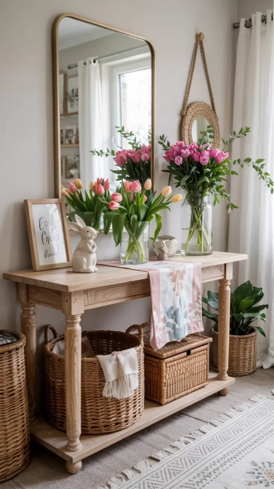
17. Change the Message on a Chalkboard Sign
A tray turns small things into one display. A distressed white tray by the door holds a pitcher of tulips, a lantern and a little house.
A chalkboard sign changes with the seasons, so you do not need to buy a new piece each time.
Set a woven mat under the tray so it does not scratch the table.
Keep the lantern battery-powered if the table sits near curtains.
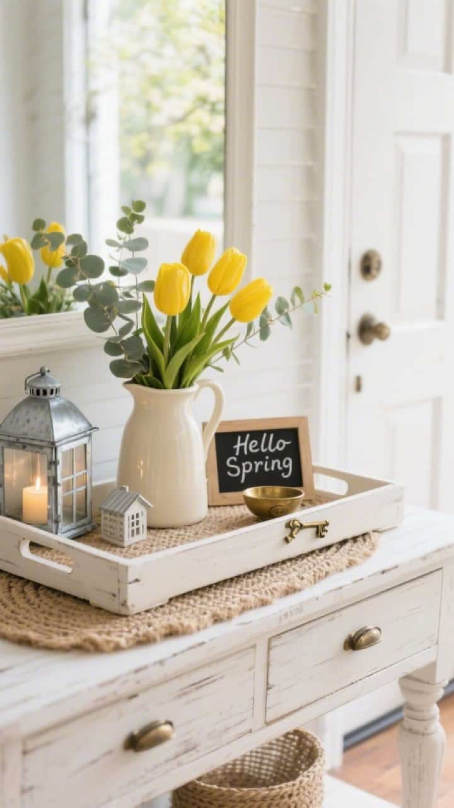
18. Fill Each Tier With a Different Texture
A tiered tray works on an island as well as a coffee table. Give each tier a different texture: eggs, greenery and a mug.
Leave about a third of each tier empty so the display breathes.
Put the heaviest things on the bottom tier. A top-heavy tray tips.
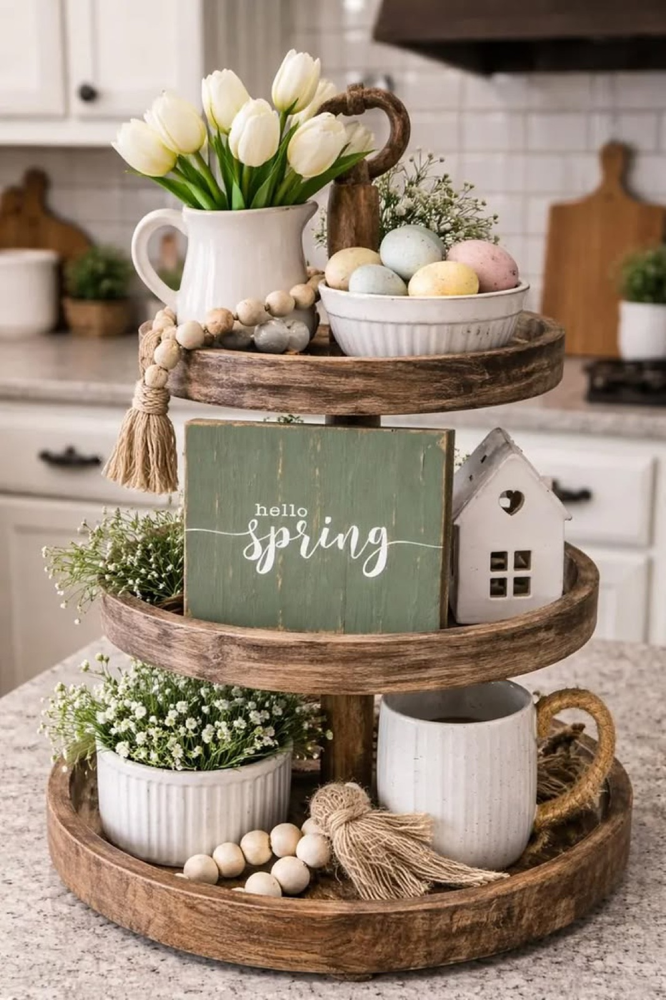
Kitchens and Dining Tables
19. Stand Floral Plates Behind White Bowls
A few patterned plates on open shelves are all a kitchen needs for spring. Stand them upright behind white bowls.
Add a pitcher of flowers and lean a cutting board against the tile, as here.
Shelves near the stove collect grease, so wipe them weekly.
A plate stand or a shelf lip stops plates from sliding.

20. Put Flowers Where Everyone Passes
The island is the best place for flowers because everyone passes it. Keep the arrangement under 12 inches so cooking is not blocked.
A wooden board under the vase protects the counter and adds warmth.
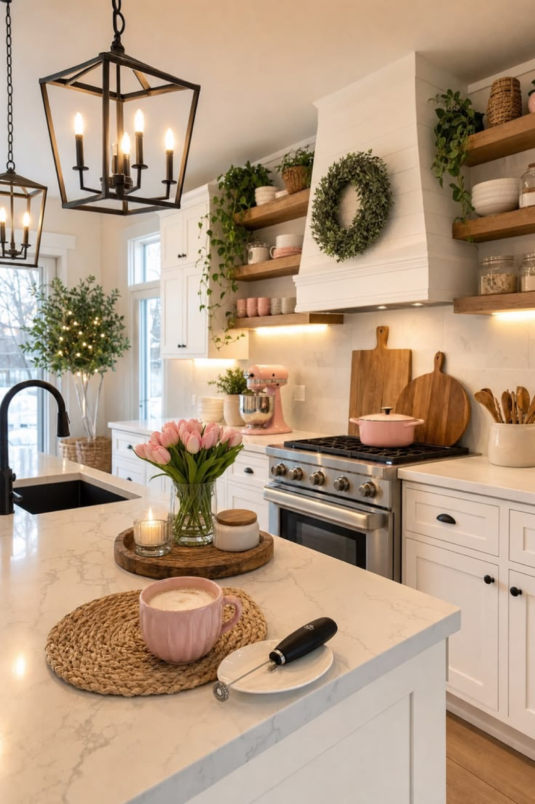
21. Lay a Blush Runner and Two Tapers
A blush linen runner is a quiet spring cue. Lay it down the center and add two tapers in small holders.
Light candles only when you are at the table, and keep flowers away from the flame.
Keep the tapers at least a hand's width from any bloom.
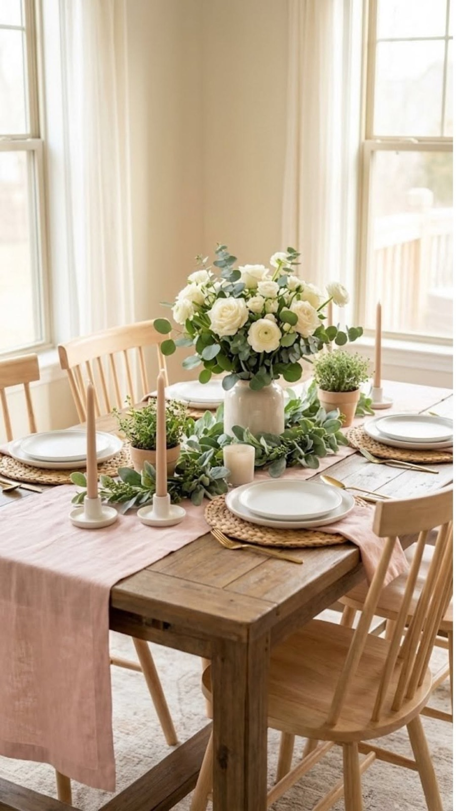
22. Edge the Runner in Lace
Lace trim gives a plain runner some charm. Choose mint or ivory in cotton, like this one.
Set the bouquet slightly off-center with a pillar candle on each side.
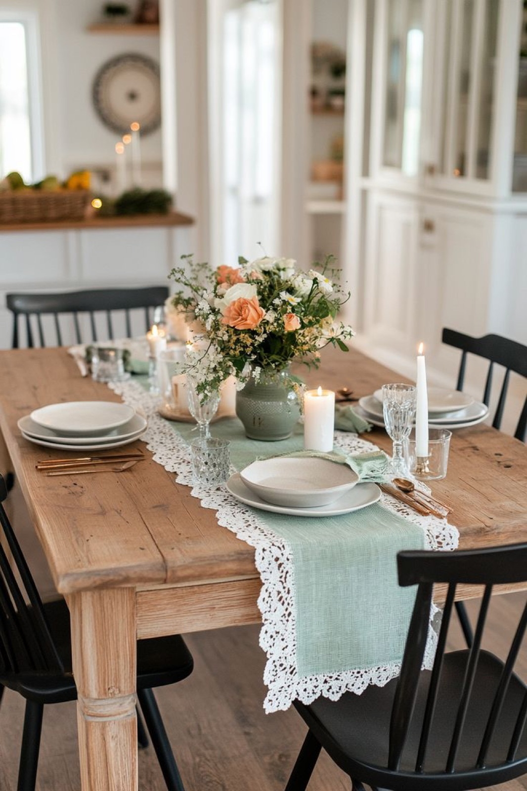
Porches and Front Doors
23. Make the Porch Feel Like a Room
A bench, a rug and a few pots make a porch feel like a room. Use pots of different heights.
A jute rug is fine outdoors if the porch is covered. Roll it up when heavy rain is forecast.
Group pots in odd numbers beside the bench. Here a bucket of tulips and a couple of baskets sit at one end.
Lanterns on the floor, like these, add height at the bench end.

24. Set Up a Potting Bench
A potting bench is a spring display and a workspace in one. Put hyacinths in pots and a bouquet in a watering can.
Hang a straw hat on the wall and keep the twine and scissors on the bench, as here.
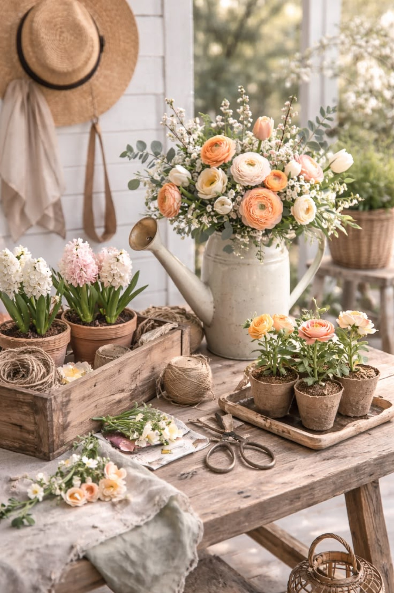
25. Check the Swing Hardware
A porch swing is the best seat in the house. Add outdoor pillows and a throw, and put pots on both sides.
Check the chains and hooks every spring before you sit down. Hardware loosens over winter.
Make sure the hooks are screwed into a beam, not a ceiling plank.

26. Plant Flowers in Milk Jugs
Old milk jugs make charming planters. Choose ones with a drain hole or add pebbles at the bottom.
Group three together for impact.
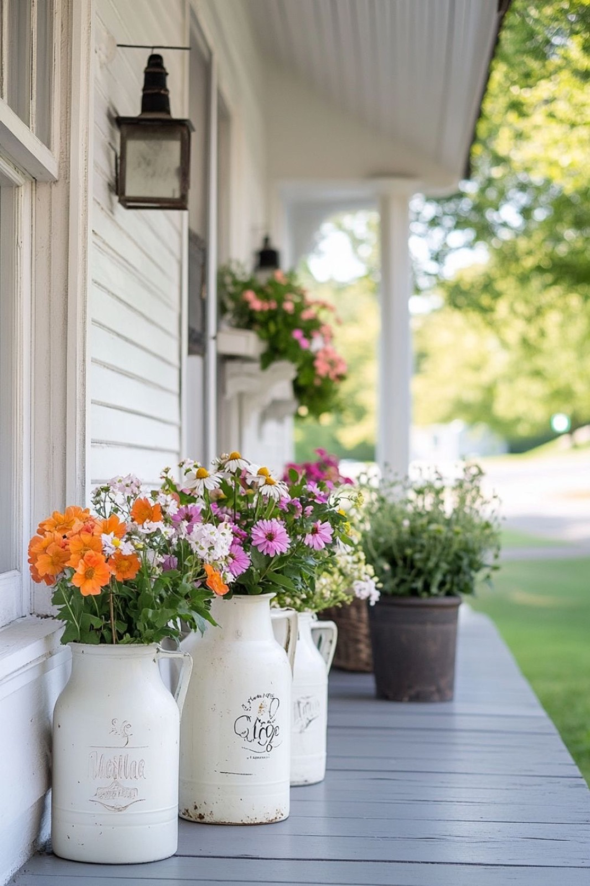
27. Hang Baskets at Six Feet
Hanging baskets use the space above eye level. Hang them at about 6 feet so nobody hits a head.
Water them every other day. Baskets dry fast in spring wind.
Use heavy-duty hooks. A watered basket weighs more than it looks.
Trailing ivy, as in these baskets, softens the porch posts and the rocking chairs.
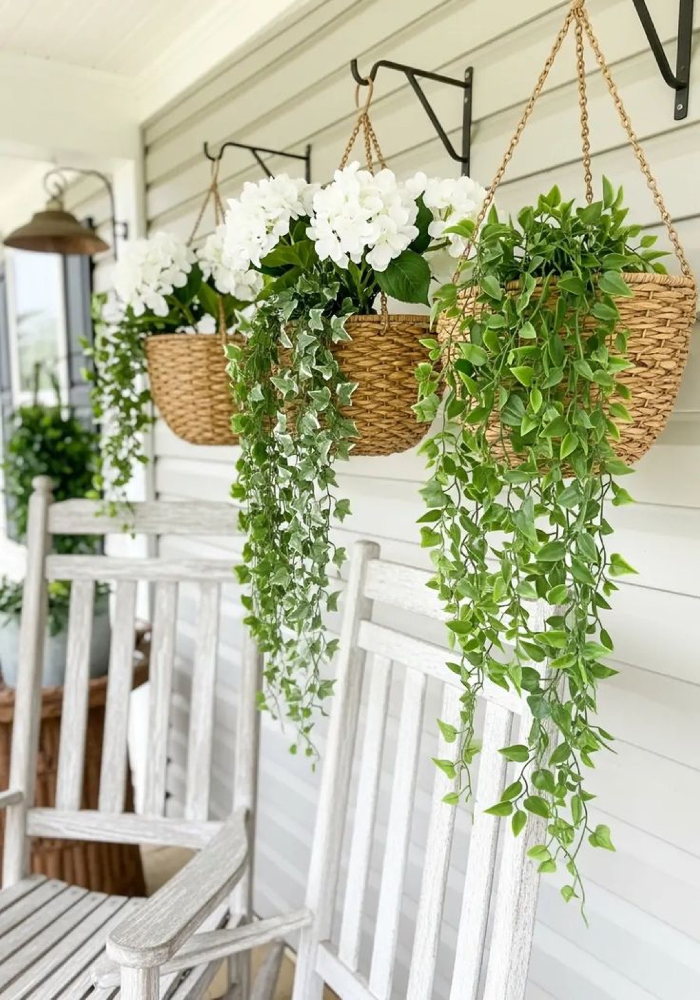
28. Hang a Basket Instead of a Wreath
A flat-back basket on a hook is a wreath alternative. Fill it with flowers and keep the garden tools inside, as here.
Use an over-the-door hook rated for at least 5 pounds.
Line the basket with plastic so water does not drip down the door.
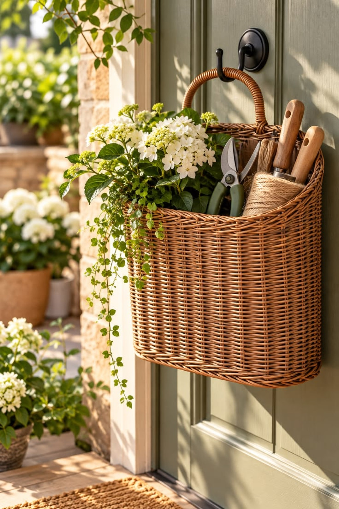
29. Lean a Bike Against the Wall
A vintage bike with a flower basket is the quickest porch focal point. Lean it against the wall and check that it does not block the door.
Keep the sign tall and narrow, like this one, so it adds height without covering the wall.
Use the kickstand. A falling bike scratches a door.
The sage green door pairs well with cream, so repeat the cream in the bike.
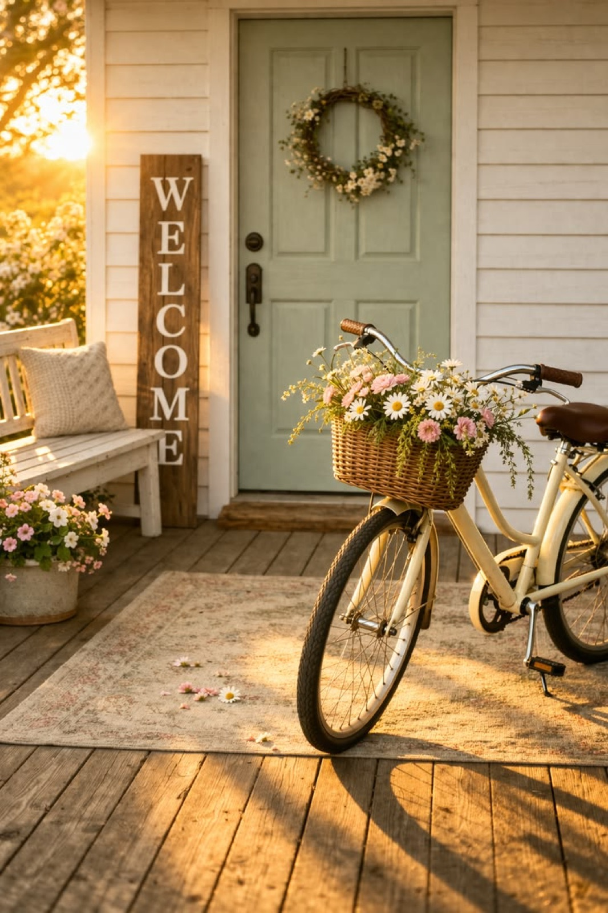
Entries, Stairs and Hallways
30. Style the Floor, Not the Table
A hallway can hold a vignette on the floor. A large pitcher and a basket of folded blankets look welcoming.
Use a runner underneath so the grouping looks placed, as on this landing.
Keep at least 36 inches clear beside any floor display.
Peonies drink a lot, so refill the pitcher daily.
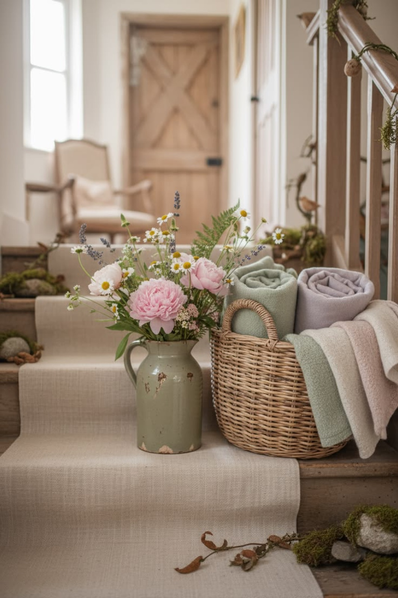
31. Wind Garland Down the Stair Rail
A greenery garland changes a staircase. Zip-tie faux ivy or leaf garland to the posts and fluff it.
Add a nest with a few blue eggs at the newel post for a spring accent.
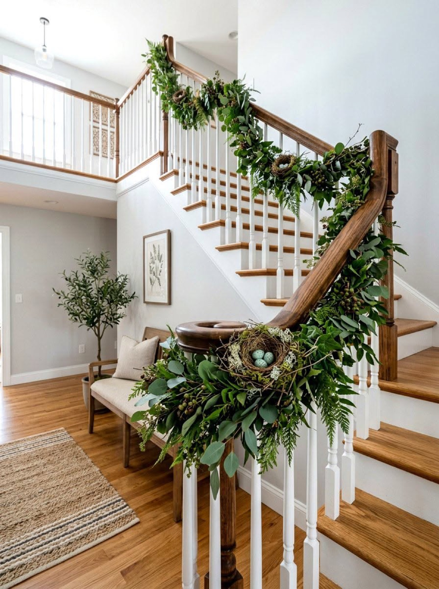
32. Hang Baskets on a Hook Rail
Hang baskets from a hook rail to add flowers where there is no table. Use sturdy hooks and light baskets.
A bench with boots underneath keeps the entry working, as here.
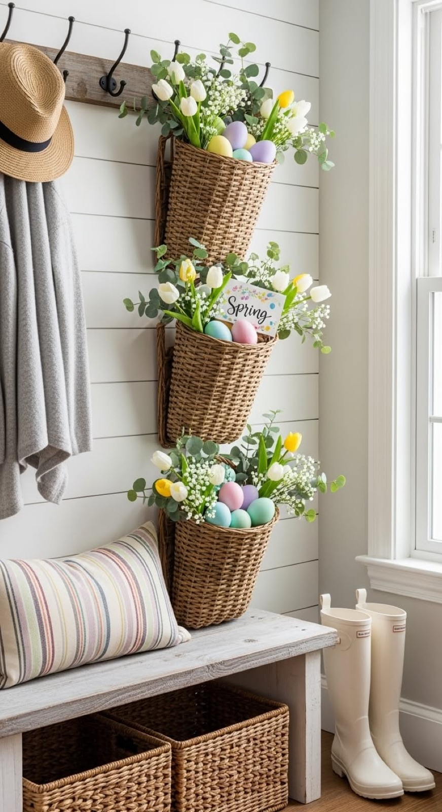
Bedrooms and Bathrooms
33. Let Floral Curtains Lead
Floral curtains and a rug are enough color in a white room. Keep the bedding plain so the pattern leads.
Pick up one color from the curtains in a single pillow.
Open the window for a few minutes each morning to freshen the room.
Choose a washable cotton rug for the bedside.
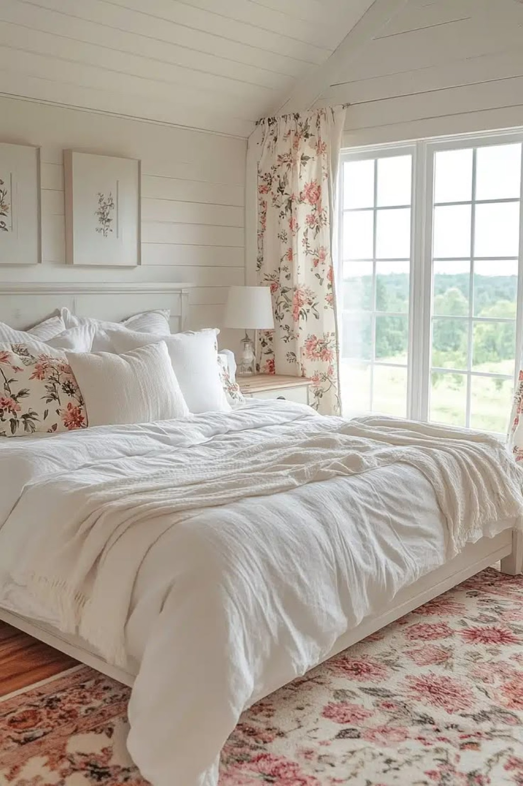
34. Choose a Small Print on Cream
A floral duvet is the easiest spring bedroom. Choose a small print on a cream background.
Add one vase of white flowers on the dresser, as here, and keep the rest of it bare.
Wash a new duvet cover once before the first night.
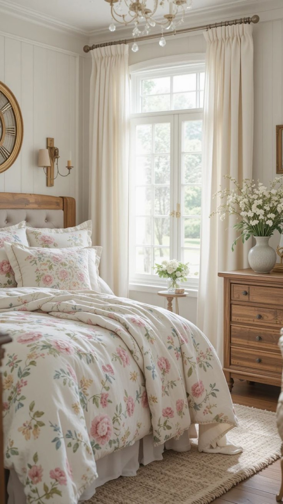
35. Keep the Nightstand to Three Things
A nightstand needs a lamp, a book and one small flower, and nothing more.
Slip a vintage doily or cloth under the vase to protect the wood.
A jam jar of daisies and roses is enough, as on this nightstand.
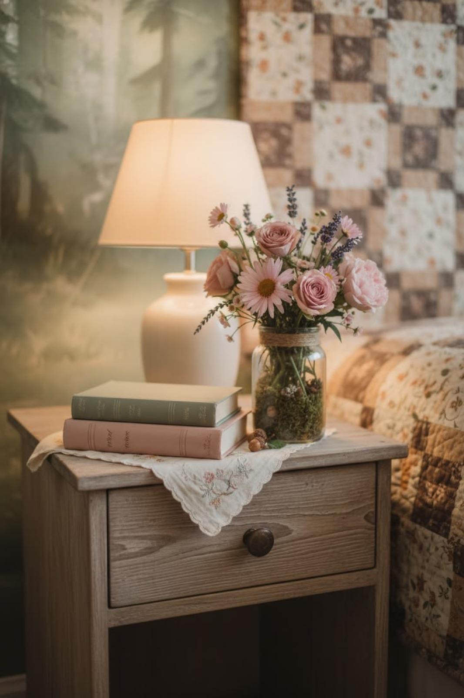
36. Roll Pastel Towels in a Basket
Swap the bathroom towels for pastels and spring arrives under the sink. Roll them and stack them in a basket.
Set a bunch of tulips in a vase by the sink and trim the stems every few days.
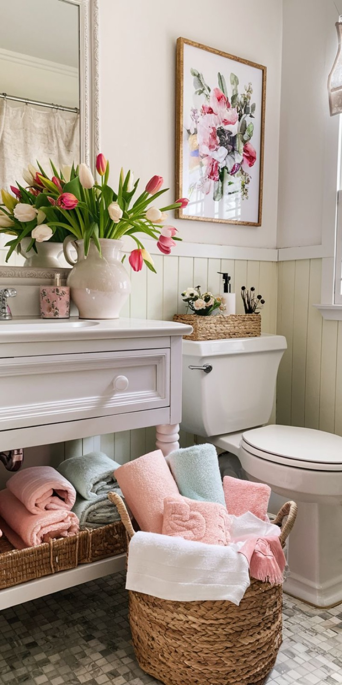
37. Pair Sage Walls With White Towels
Sage walls make a bathroom feel like a spa. Pair them with white towels and a wood shelf, as here.
Use a rug with a rubber backing and open the window after a shower to keep damp away.
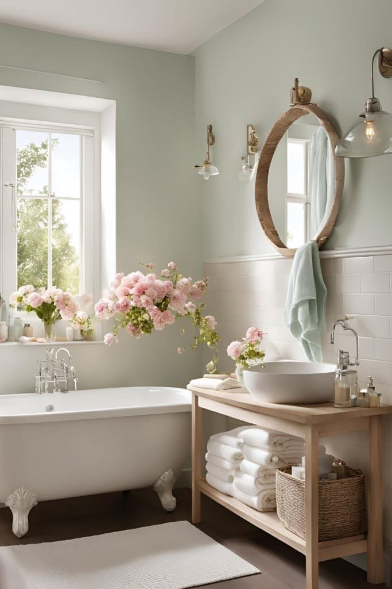
Common Mistakes (and Fixes)
- Mistake: matching every container. Fix: mix containers and fabrics from different sources so the room looks gathered.
- Mistake: a centerpiece that crowds the plates. Fix: keep it under 12 inches and leave room for the dishes.
- Mistake: stale water. Fix: change it every two days and cut stems at an angle.
- Mistake: hanging baskets that hit heads. Fix: mount them at 6 feet and use hooks rated for a watered basket.
- Mistake: winter fabrics in spring. Fix: swap wool and velvet for cotton and linen.
Where to Start
Start with a hunt through the cupboards. Pull out every pitcher, jar and basket you own and see what a few stems can do.
Spread them around the house, one per room, and spring arrives before you buy a thing.